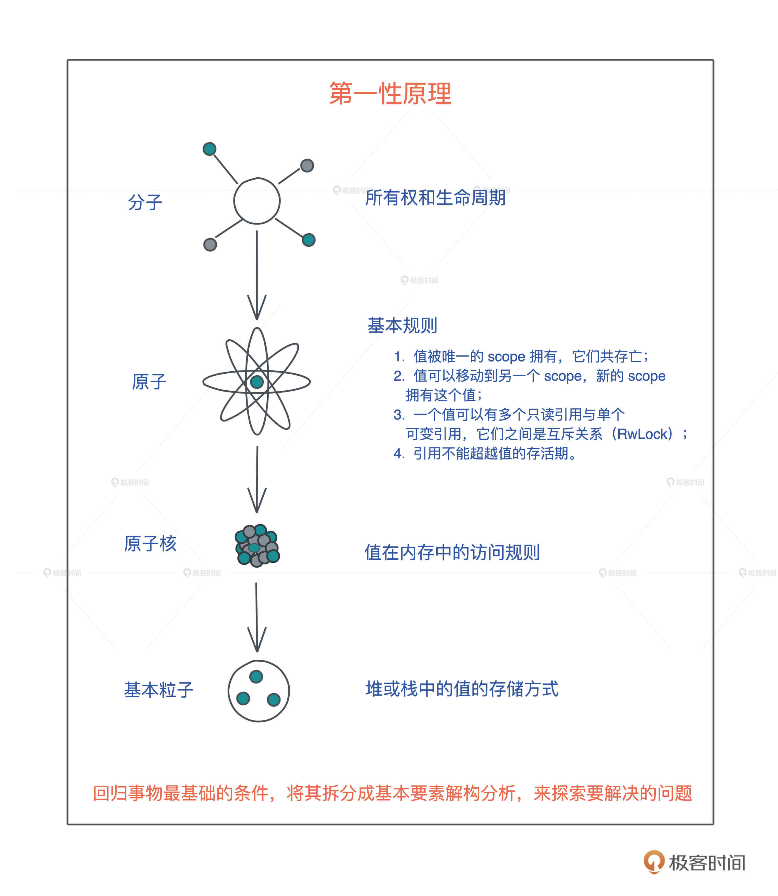

- 00 开篇词 让Rust成为你的下一门主力语言.md.html
- 01 内存：值放堆上还是放栈上，这是一个问题.md.html
- 02 串讲：编程开发中，那些你需要掌握的基本概念.md.html
- 03 初窥门径：从你的第一个Rust程序开始！.md.html
- 04 get hands dirty：来写个实用的CLI小工具.md.html
- 05 get hands dirty：做一个图片服务器有多难？.md.html
- 06 get hands dirty：SQL查询工具怎么一鱼多吃？.md.html
- 07 所有权：值的生杀大权到底在谁手上？.md.html
- 08 所有权：值的借用是如何工作的？.md.html
- 09 所有权：一个值可以有多个所有者么？.md.html
- 10 生命周期：你创建的值究竟能活多久？.md.html
- 11 内存管理：从创建到消亡，值都经历了什么？.md.html
- 12 类型系统：Rust的类型系统有什么特点？.md.html
- 13 类型系统：如何使用trait来定义接口？.md.html
- 14 类型系统：有哪些必须掌握的trait？.md.html
- 15 数据结构：这些浓眉大眼的结构竟然都是智能指针？.md.html
- 16 数据结构：Vec_T_、&[T]、Box_[T]_ ，你真的了解集合容器么？.md.html
- 17 数据结构：软件系统核心部件哈希表，内存如何布局？.md.html
- 18 错误处理：为什么Rust的错误处理与众不同？.md.html
- 19 闭包：FnOnce、FnMut和Fn，为什么有这么多类型？.md.html
- 20 4 Steps ：如何更好地阅读Rust源码？.md.html
- 21 阶段实操（1）：构建一个简单的KV server-基本流程.md.html
- 22 阶段实操（2）：构建一个简单的KV server-基本流程.md.html
- 23 类型系统：如何在实战中使用泛型编程？.md.html
- 24 类型系统：如何在实战中使用trait object？.md.html
- 25 类型系统：如何围绕trait来设计和架构系统？.md.html
- 26 阶段实操（3）：构建一个简单的KV server-高级trait技巧.md.html
- 27 生态系统：有哪些常有的Rust库可以为我所用？.md.html
- 28 网络开发（上）：如何使用Rust处理网络请求？.md.html
- 29 网络开发（下）：如何使用Rust处理网络请求？.md.html
- 30 Unsafe Rust：如何用C++的方式打开Rust？.md.html
- 31 FFI：Rust如何和你的语言架起沟通桥梁？.md.html
- 32 实操项目：使用PyO3开发Python3模块.md.html
- 33 并发处理（上）：从atomics到Channel，Rust都提供了什么工具？.md.html
- 34 并发处理（下）：从atomics到Channel，Rust都提供了什么工具？.md.html
- 35 实操项目：如何实现一个基本的MPSC channel？.md.html
- 36 阶段实操（4）：构建一个简单的KV server-网络处理.md.html
- 37 阶段实操（5）：构建一个简单的KV server-网络安全.md.html
- 38 异步处理：Future是什么？它和async_await是什么关系？.md.html
- 39 异步处理：async_await内部是怎么实现的？.md.html
- 40 异步处理：如何处理异步IO？.md.html
- 41 阶段实操（6）：构建一个简单的KV server-异步处理.md.html
- 42 阶段实操（7）：构建一个简单的KV server-如何做大的重构？.md.html
- 43 生产环境：真实世界下的一个Rust项目包含哪些要素？.md.html
- 44 数据处理：应用程序和数据如何打交道？.md.html
- 45 阶段实操（8）：构建一个简单的KV server-配置_测试_监控_CI_CD.md.html
- 46 软件架构：如何用Rust架构复杂系统？.md.html
- 加餐 Rust2021版次问世了！.md.html
- 加餐 代码即数据：为什么我们需要宏编程能力？.md.html
- 加餐 宏编程（上）：用最“笨”的方式撰写宏.md.html
- 加餐 宏编程（下）：用 syn_quote 优雅地构建宏.md.html
- 加餐 愚昧之巅：你的Rust学习常见问题汇总.md.html
- 加餐 期中测试：参考实现讲解.md.html
- 加餐 期中测试：来写一个简单的grep命令行.md.html
- 加餐 这个专栏你可以怎么学，以及Rust是否值得学？.md.html
- 大咖助场 开悟之坡（上）：Rust的现状、机遇与挑战.md.html
- 大咖助场 开悟之坡（下）：Rust的现状、机遇与挑战.md.html
- 特别策划 学习锦囊（一）：听听课代表们怎么说.md.html
- 特别策划 学习锦囊（三）：听听课代表们怎么说.md.html
- 特别策划 学习锦囊（二）：听听课代表们怎么说.md.html
- 用户故事 绝望之谷：改变从学习开始.md.html
- 用户故事 语言不仅是工具，还是思维方式.md.html
- 结束语 永续之原：Rust学习，如何持续精进？.md.html
- 捐赠
00 开篇词 让Rust成为你的下一门主力语言
你好，我是陈天，目前是北美最大的免费流媒体服务TubiTV的研发副总裁，也是公众号程序人生和知乎专栏迷思的作者。
十八年以来，我一直从事高性能系统的研发工作，涵盖网络协议、网络安全、服务端架构、区块链以及云服务等方向。
因为喜欢使用合适的工具解决合适的问题，在职业生涯的不同阶段，我深度使用过形态和机理都非常不同的开发语言。
我用 C 和汇编打造过各种网络协议，维护过在网络安全领域非常知名的嵌入式操作系统 ScreenOS；用 Python/JavaScript 撰写过我曾经的创业项目途客圈；用 Node.js/Elixir 打造过 TubiTV 高并发的后端核心；用 Elixir 打造过区块链框架 Forge，也研究过 Haskell/F#、Clojure/Racket、Swift、Golang 和 C#等其他语言。
2018年起，我开始关注Rust。当时我正在开发 Forge ，深感 Elixir 处理计算密集型功能的无力，在汉东，也是《Rust编程之道》作者的介绍下，我开始学习和使用 Rust。
也正是因为之前深度使用了很多开发语言，当我一接触到 Rust，就明白它绝对是面向未来的利器。
首先，你使用起来就会感受到，Rust是一门非常重视开发者用户体验的语言。如果做一个互联网时代的编程语言用户体验的排行，Rust 绝对是傲视群雄的独一档。
你无法想象一门语言的编译器在告知你的代码错误的同时，还会极尽可能，给你推荐正确的代码。这就好比在你开发的时候，旁边坐着一个无所不知还和蔼可亲的大牛，在孜孜不倦地为你审阅代码，帮你找出问题所在。
比如下面的代码，我启动了一个新的线程引用当前线程的变量（代码）：
let name = "Tyr".to_string();
std::thread::spawn(|| {
println!("hello {}", name);
});
这段代码极其简单，但它隐含着线程不安全的访问。当前线程持有的变量 name 可能在新启动的线程使用之前就被释放，发生 use after free 错误。
Rust 编译器，不仅能够通过类型安全在编译期检测出这一错误，告诉你这个错误产生的原因：“may outlive borrowed value”（我们暂且不管它是什么意思），并且，它还进一步推荐你加入 “move” 解决这个错误。为了方便你进一步了解错误详情，它还贴心地给出一个命令行 “rustc –explain E0373”，让你可以从知识库中获取更多的信息：
这种程度的体验，一旦你适应了 Rust，就很难离得开。Rust 语言的这种极致用户体验不仅仅反映在编译器上，整个语言的工具链包括 rustup、cargo 等，都是如此简单易用、善解人意。
其次，众所周知的优异性能和强大的表现力，让Rust在很多场合都能够施展拳脚。
截止 2021 年，主流的互联网公司都把 Rust 纳入主力语言，比如开发操作系统 Redox/Fuchsia、高性能网络 Tokio、应用的高并发后端 TiKV，甚至客户端软件本身（飞书）。我们欣喜地看到，Rust 除了在其传统的系统开发领域，如操作系统、设备驱动、嵌入式等方向高歌猛进之外，还在服务端高性能、高并发场景遍地开花。
最近两年，几乎每隔一段时间我们就能听到很多知名互联网企业用 Rust 重构其技术栈的消息。比如 Dropbox 用 Rust 重写文件同步引擎、Discord 用 Rust 重写其状态服务。其实，这些公司都是业务层面驱动自然使用到Rust的。
比如 Discord原先使用 Golang 的状态服务，一来会消耗大量的内存，二来在高峰期时不时会因为垃圾回收导致巨大的延迟，痛定思痛后，他们选用 Rust 重写。按照 Discord 的官方说法，Rust 除了带来性能上的提升外，还让随着产品迭代进行的代码重构变得举重若轻。
Along with performance, Rust has many advantages for an engineering team. For example, its type safety and borrow checker make it very easy to refactor code as product requirements change or new learnings about the language are discovered. Also, the ecosystem and tooling are excellent and have a significant amount of momentum behind them.
最后，是我自己的使用感觉，Rust会越用越享受。以我个人的开发经验看，很多语言你越深入使用或者越广泛使用，就越会有“怒其不争”的感觉，因为要么掣肘很多，无法施展；要么繁文缛节太多，在性能和简洁之间很难二选一。
而我在使用 Rust 的时候，这样的情况很少见。操作简单的 bit 、处理大容量的 parquet、直面 CPU 乱序指令的 atomics，乃至像 Golang 一样高级封装的 channel，Rust 及其生态都应有尽有，让你想做什么的时候不至于“拔剑四顾心茫然”。
学习 Rust 的难点
在体验了 Rust 的强大和美妙后，2019 年，我开办了一系列讲座向我当时的团队普及 Rust，以便于处理 Elixir 难以处理的计算密集型的任务。但在这个过程中，我也深深地感受到把 Rust 的核心思想教给有经验开发者的艰辛。
Rust 被公认是很难学的语言，学习曲线很陡峭。
作为一门有着自己独特思想的语言，Rust 采百家之长，从 C++ 学习并强化了 move 语义和 RAII，从 Cyclone 借鉴和发展了生命周期，从 Haskell 吸收了函数式编程和类型系统等。
所以如果你想从其他语言迁移到 Rust，必须要经过一段时期的思维转换（Paradigm Shift）。
从命令式（imperative）编程语言转换到函数式（functional）编程语言、从变量的可变性（mutable）迁移到不可变性（immutable）、从弱类型语言迁移到强类型语言，以及从手工或者自动内存管理到通过生命周期来管理内存，难度是多重叠加。
而 Rust 中最大的思维转换就是变量的所有权和生命周期，这是几乎所有编程语言都未曾涉及的领域。
但是你一旦拿下这个难点，其他的知识点就是所有权和生命周期概念在不同领域的具体使用，比如，所有权和生命周期如何跟类型系统结合起来保证并发安全、生命周期标注如何参与到泛型编程中等等。
学习过程中，在所有权和生命周期之外，语言背景不同的工程师也会有不同难点，你可以重点学习：
- C 开发者，难点是类型系统和泛型编程；
- C++ 开发者，难点主要在类型系统；
- Python/Ruby/JavaScript 开发者，难点在并发处理、类型系统及泛型编程；
- Java 开发者，难点在异步处理和并发安全的理解上；
- Swift 开发者，几乎没有额外的难点，深入理解 Rust 异步处理即可。
只要迈过这段艰难的思维转换期，你就会明白，Rust 确实是一门从内到外透着迷人光芒的语言。
从语言的内核来看，它重塑了我们对一些基本概念的理解。比如 Rust 清晰地定义了变量在一个作用域下的生命周期，让开发者在摒弃垃圾回收（GC）这样的内存和性能杀手的前提下，还能够无需关心手动内存管理，让内存安全和高性能二者兼得。
从语言的外观来看，它使用起来感觉很像 Python/TypeScript 这样的高级语言，表达能力一流，但性能丝毫不输于 C/C++，从而让表达力和高性能二者兼得。
这种集表达力、高性能、内存安全于一身的体验，让 Rust 在 1.0 发布后不久就一路高飞猛进，从 16 年起，连续六年成为 Stack Overflow 用户评选出来的最受喜爱的语言。
如何学好 Rust？
Rust 如此受人喜爱，有如此广泛的用途，且当前各大互联网厂商都在纷纷接纳 Rust，那么我们怎样尽可能顺利地度过艰难的思维转换期呢？
在多年编程语言的学习和给团队传授经验的过程中，我总结了一套从入门到进阶的有效学习编程语言的方法，对 Rust 也非常适用。
我认为，任何语言的学习离不开精准学习+刻意练习。
所谓精准学习，就是深挖一个个高大上的表层知识点，回归底层基础知识的本原，再使用类比、联想等方法，打通涉及的基础知识；然后从底层设计往表层实现，一层层构建知识体系，这样“撒一层土，夯实，再撒一层”，让你对知识点理解得更透彻、掌握得牢固。
比如 Rust 中的所有权和生命周期，很多同学说自己看书或者看其他资料，这部分都学得云里雾里的，即便深入逐一理解了几条基本规则，也依旧似懂非懂。
但我们进一步思考“值在内存中的访问规则”，最后回归到堆和栈这些最基础的软件开发的概念，重新认识堆栈上的值的存储方式和生命周期之后，再一层层往上，我们就会越学越明白。
这就是回归本原的重要性，也就是常说的第一性原理：回归事物最基础的条件，将其拆分成基本要素解构分析，来探索要解决的问题。

精准学习之后，我们就需要刻意练习了。刻意练习，就是用精巧设计的例子，通过练习进一步巩固学到的知识，并且在这个过程中尝试发现学习过程中的不自知问题，让自己从“我不知道我不知道”走向“我知道我不知道”，最终能够在下一个循环中弥补知识的漏洞。
这个过程就像子思在《中庸》里谈治学的方法：博学之，审问之，慎思之，明辨之，笃行之。我们学习就要这样，学了没有学会绝不罢休，不断在学习 - 构建 - 反思这个循环中提升自己。Rust 的学习，也是如此。

根据这种学习思路，在这个专栏里，我会带着你循序渐进地探索 Rust 的基本概念和知识、开发的原则和方法，力求掌握 Rust 开发的精髓；同时，每一部分内容，都用一个或多个实操项目帮你巩固知识、查漏补缺。
具体来看，整个专栏会分成五个模块：
- 前置知识篇
在正式学习 Rust 之前，先来回顾一下软件开发的基础概念：堆、栈、函数、闭包、虚表、泛型、同步和异步等。你要知道，想要学好任意一门编程语言，首先要吃透涉及的概念，因为编程语言，不过是这些概念的具体表述和载体。
- 基础知识篇
我们会先来一个get hands dirty周，从写代码中直观感受Rust到底魅力在哪里，能怎么用，体会编程的快乐。
然后回归理性，深入浅出地探讨 Rust 变量的所有权和生命周期，并对比几种主流的内存管理方式，包括，Rust 的内存管理方式、C 的手工管理、Java 的 GC、Swift 的 ARC 。之后围绕着所有权和生命周期，来讨论 Rust 的几大语言特性：函数式编程特性、类型系统、泛型编程以及错误处理。
- 进阶篇
Pascal 之父，图灵奖得主尼古拉斯·沃斯（Niklaus Wirth）有一个著名的公式：算法+数据结构=程序。想随心所欲地使用Rust 为你的系统构建数据结构，深度掌握类型系统必不可少。
在 Rust 里，你可以使用 Trait 做接口设计、使用泛型做编译期多态、使用 Trait Object 做运行时多态。在你的代码里用好 Trait 和泛型，可以非常高效地解决复杂的问题。
随后我们会介绍 unsafe rust，不要被这个名字吓到。所谓 unsafe，不过是把 Rust 编译器在编译器做的严格检查退步成为 C++ 的样子，由开发者自己为其所撰写的代码的正确性做担保。
最后我们还会讲到 FFI，这是 Rust 和其它语言互通操作的桥梁。掌握好 FFI，你就可以用 Rust 为你的 Python/JavaScript/Elixir/Swift 等主力语言在关键路径上提供更高的性能，也能很方便地引入 Rust 生态中特定的库。
- 并发篇
从没有一门语言像 Rust 这样，在提供如此广博的并发原语支持的前提下，还能保证并发安全，所以 Rust 敢自称无畏并发（Fearless Concurrency）。在并发篇，我带你从 atomics 一路向上，历经 Mutex、Semaphore、Channel，直至 actor model。其他语言中被标榜为实践典范的并发手段，在 Rust 这里，只不过是一种并发工具。
Rust 还有目前最优秀的异步处理模型，我相信假以时日，这种用状态机巧妙实现零成本抽象的异步处理机制，必然会在更多新涌现出来的语言中被采用。
在并发处理这个领域，Rust 就像天秤座圣衣，刀枪剑戟斧钺钩叉，十八般兵器都提供给你，让你用最合适的工具解决最合适的问题。
- 实战篇
掌握一门语言的特性，能应用这些特性，写出解决一些小问题的代码，算是初窥门径，就像在游泳池里练习冲浪，想真正把语言融会贯通，还要靠大风大浪中的磨炼。在这篇中，我们会学习如何把 Rust 应用在生产环境中、如何使用 Rust 的编程思想解决实际问题，最后谈谈如何用 Rust 构建复杂的软件系统。
整个专栏，我会把内容尽量写得通俗易懂，并把各个知识点类比到不同的语言中，力求让你理解 Rust 繁多概念背后的设计逻辑。每一讲我都会画出重点，理清知识脉络，再通过一个个循序渐进的实操项目，让你把各个知识点融会贯通。
我衷心希望，通过这个专栏的学习，你可以从基本概念出发，一步步跨过下图的愚昧之巅，越过绝望之谷，向着永续之原进发！通过一定的努力，最终自己也可以用 Rust 构建各种各样的系统，让自己职业生涯中多一门面向未来的利器。
我非常希望你能坚持学下去，和我一直走到最后一讲。这中间，你如果有想不明白的地方，可以先多思考多琢磨，如果还有困惑，欢迎你在留言区问我。
在具体写代码的时候，你可以多举一反三，不必局限于我给的例子，可以想想工作生活中的产品场景，思考如何用 Rust 来实现。
每讲的思考题，也希望你尽量完成，记录分享你的分析步骤和思路。有需要进一步总结提炼的知识点，你也可以记录下来，与我与其他学友分享。毕竟，大物理学家费曼总结过他的学习方法，评价和分享/教授给别人是非常重要的步骤，能让你进一步巩固自己学到的知识和技能。
如果想找找参考思路，也可以看我在GitHub上的思考题答案点拨，之后文章里的代码也都整理到这里了，依赖相应版本都会更新（另外，课程里的图片都是用 excalidraw 绘制的）。
最后，你可以自己立个 Flag，哪怕只是在留言区打卡你的学习天数或者Rust代码行数，我相信都是会有效果的。3 个月后，我们再来一起验收。
总之，让我们携手，为自己交付 “Rust 开发” 这个大技能，让 Rust 成为你的下一门主力语言！
订阅后，戳这里加入“Rust语言入门交流群”，一起来学习Rust。
© 2019 - 2023 Liangliang Lee. Powered by gin and hexo-theme-book.